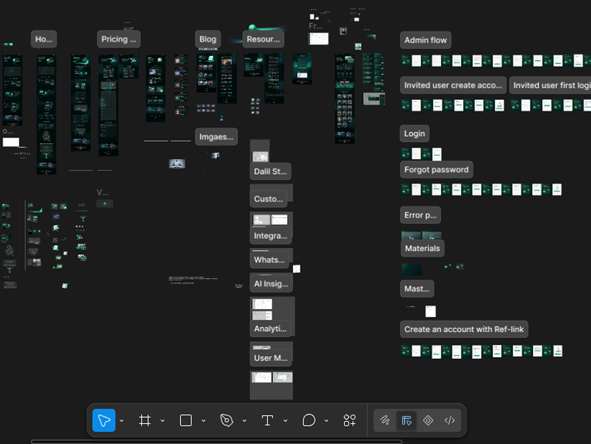

Delil AI
Lead Finder & Outreach Engine
Sales teams do not fail at closing deals. They fail at the manual friction of switching tabs, manually qualifying data, and jumping across disconnected software silos to track simple communication cycles.
Context & Direct Insight
Most modern CRM tools force sales reps into a state of cognitive fatigue.
To understand the core workflow breakdown before designing a single screen, I audited active user frustrations across Reddit threads, Facebook sales communities, app store reviews, and informal user interviews. The data showed that reps spend up to 70% of their operational hours copying and pasting details across multiple window tabs.
A competitive audit of market leaders like Apollo and Lemlist revealed a critical structural flaw: they treat lead discovery and outreach execution as isolated feature sets, burying the transition action four clicks deep.
This platform transforms that fragmented journey into a highly responsive, single-pane system dashboard.
The Core Architecture
Instead of building standard, linear page-routing directories, the architecture treats the lead database as an active workspace.
As visualized in the platform architecture mapping seen in Screenshot, the system logic explicitly isolates administrative configurations, user setup pathways, invite verification loops, and analytical engines into modular components. This architectural layout separates background data administration from front-facing, high-velocity work. It ensures that the database handles background account verification processes without lagging user operations on active leads.

Dynamic Workspace Control
To eliminate screen clutter while maintaining high data density, I designed a persistent data manipulation model. As highlighted in Column image, the setup interface gives users a toggled pop-over menu to activate or hide data variables like Deal Value, CRM Score, and active Warnings instantly. This gives the operator full screen control over their data layout without adding page navigation weight.

Deep Lead Analytics & Signals
When a user drills down into an individual prospect, the system avoids opening full-page profile views that break operational workflow momentum.
As shown in signals.jpg, clicking an individual lead surfaces an expansive, slide-out details inspector panel directly beside the main grid. This inspector aggregates a proprietary algorithmic "CRM Score" alongside real-time behavioral updates, decoding complex activity streams into clear timeline markers.
Dynamic Analytics & Dashboards
To prove deep product thinking beyond static lead lists, the architecture incorporates user-configured analytical modules.
As detailed in graph creation.jpg, operators construct localized performance charts on the fly using a modal configuration menu. They select a chart layout widget, define an active target metric, assign grouping logic, and apply value filters directly over the live dashboard. This structural execution gives growth teams instant visual access to pipeline trends without requiring third-party data engineering tools.
If I Measured This Tomorrow
If this interface were deployed to live servers tomorrow, its architectural success would be measured using three precise behavioral indicators:
- Time-to-First-Action (TTFA): The exact number of seconds it takes a newly registered user to import a list, qualify a lead, and initiate an outreach step.
- Column Toggle Engagement: The percentage of users interacting with the dynamic column customizer to determine if the baseline fields match real user intent.
- Drawer Retention Rate: The ratio of profile actions executed purely inside the slide-out inspector panels versus full-page navigations.
What I'd Do Differently
Given an expanded operational research timeline, I would stress-test the density scaling threshold of the tabular lead views with accounts tracking over 50,000 active records simultaneously. I would specifically isolate and monitor how quickly an agent can scan, multi-select, and mass-assign automation groups under heavy data loads without experiencing layout paralysis.